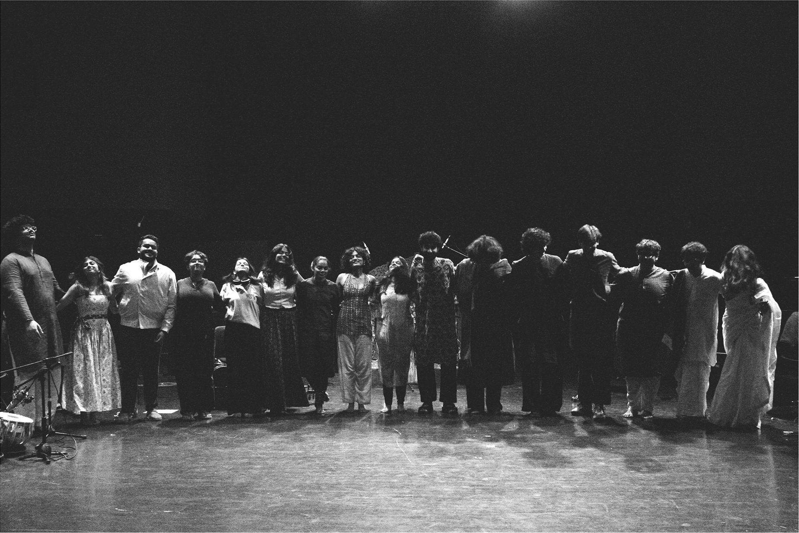

Fundraiser: Anhad
Anhad brings together nine musicians and a dancer from very different worlds to explore these themes. In a 40-minute original set, a violist trained in the Carnatic classical tradition plays alongside two Hindustani-trained vocalists. A jazz drummer hits polyrhythmic beats with the tabla, while a Western Classical Cello ties the melody together. The guitar and bass weave acoustics and rhythm into the music, almost blurring the distinctions between songs.
At the centre of the show, a kathak dancer performs to the entire set, responding to each of the instruments, striking up conversations with the violin, the drums and the vocalists to create a seamless moment of simultaneous beginnings and endings. The music is as much a visual experience as a sonic one. Anhad strives to coalesce familiar textures like blues and rock riffs with Raags and Taal: an experimental blend of time and space, art and artist, performer and audience.
All Anhad team members are either in our final years of University or have freshly graduated. We are taking this leap largely independently, and are looking to build the resources necessary to take Anhad from an idea to a fully realised music and dance production. The set list and introduction to all the performers are up on our website.

We are looking to raise a total contribution of ₹20,000 that will be directed towards the foundational costs of bringing this production to life: renting recording and rehearsal spaces, hiring and accessing professional recording equipment, sound engineering, and other essential production expenses. If you would be willing to contribute any sum towards this endeavour, it would mean a great deal to all of us. If you know someone else who might connect with what we are trying to create, we would be very grateful if you could share our initiative with them.
We are also performing at Kunzum Bookstore, GK2 on Friday, 11th December, 2026, 7:30 PM onwards. The tickets for our first show are available on our website. Every contribution, big or small, will help us give this experiment space, resources and opportunity. We would love for you to be a part of Anhad's journey!
Contribute